PORTFOLIO
hello! my name is Icicle, a 17 year old who's ambitious in the world of computer science!
this is a place where I showcase many of my projects that I've worked on throughout my scripting career
there are currently 4 sections to this portfolio, I may add more in the future! thank you!
this portfolio was made through HTML, CSS, and JS
NOTES: these are only some of my coding projects; others might not be included
all the code shared here are made by me and are open source, feel free to use them!!
(although my code may or may not be the best way to do things)
lua - roblox studio
one of my favorite languages, I like how it's easy it is to learn as a high level programming language along with its powerful aspects
simulating sorting methods with objects:
-- module script local module = {} local SORT_DELAY = 0 -- converts a folder into an array from scratch - index is based on position local function FolderToArray(partsFolder : Folder) local parts = partsFolder:GetChildren() table.sort(parts, function(a, b) return a.Position.Z < b.Position.Z end) return parts end local function SetPosition(parts : {}) for i, part in parts do part.Position = Vector3.new(0, part.Size.Y / 2, (i - 1) * part.Size.Z) end end function module.GenerateParts(parts : Folder, count : number) local PART_SIZE = 4 -- size of the square part local HUE_OFFSET = 0.6 -- where the hue starts from (0 to 1) local HUE_RANGE = 0.1 -- whats the range of that hue (0 to 1) -- creates parts for i = 1, count do local part = script.Part:Clone() part.Name = i part.Anchored = true part.Color = Color3.fromHSV(i / (count / HUE_RANGE) + HUE_OFFSET, 0.5, 1) -- part.Color = Color3.fromHSV(0, 0, 0.5 - (i / (count / HUE_RANGE) + HUE_OFFSET)) part.Size = Vector3.new(PART_SIZE, i * PART_SIZE, PART_SIZE) part.Position = Vector3.new(0, part.Size.Y / 2, (i - 1) * part.Size.Z) part.Parent = parts end module.MixParts(workspace.Parts) end function module.MixParts(partsFolder : Folder) local parts = FolderToArray(partsFolder) local mixedParts = {} -- temporarily stores the completed array local availableSpots = {} -- stores the index of each part -- inserts spots according to number of parts for i in parts do table.insert(availableSpots, i) end -- positions parts into random spots for i, part in parts do local randomSpotsIndex = math.random(1, #availableSpots) local randomPartsIndex = availableSpots[randomSpotsIndex] -- (value that holds the index of the "parts" array) -- for each iteration, a random index will have the value of this part mixedParts[randomPartsIndex] = part -- create a temporary array so it doesnt conflict with the new data in the "parts" array table.remove(availableSpots, randomSpotsIndex) end parts = mixedParts SetPosition(parts) end function module.Bogosort(partsFolder : Folder) local comparisons = 0 local sorted = false local function Sorted() local parts = FolderToArray(partsFolder) -- since we mixed the parts, we need to get the array again for i = 1, #parts do if not parts[i + 1] then continue end -- ignores nonexistent index if parts[i].Size.Y > parts[i + 1].Size.Y then return false end end return true end while not Sorted() do module.MixParts(partsFolder) comparisons += 1 task.wait(SORT_DELAY) end print(`{comparisons} comparisons`) end local function HighlightTarget(part : Part) script.HighlightTarget.Adornee = part end local function HighlightPart(part : Part) script.HighlightPart.Adornee = part end local function Unhighlight() script.HighlightPart.Adornee = nil script.HighlightTarget.Adornee = nil end function module.SelectionSort(partsFolder : Folder) local parts = FolderToArray(partsFolder) local minIndex local comparisons = 0 for i, part in parts do minIndex = i for j = i + 1, #parts do if tonumber(parts[j].Size.Y) < tonumber(parts[minIndex].Size.Y) then minIndex = j end HighlightTarget(parts[minIndex]) HighlightPart(parts[j]) comparisons += 1 task.wait(SORT_DELAY) end parts[i] = parts[minIndex] parts[minIndex] = part SetPosition(parts) end Unhighlight() print(`{comparisons} comparisons`) end function module.BubbleSort(partsFolder : Folder) local parts = FolderToArray(partsFolder) local swapped local comparisons = 0 for i = 1, #parts do swapped = false for j = 1, #parts - i do if not parts[j + 1] then continue end -- ignores nonexistent index if parts[j].Size.Y > parts[j + 1].Size.Y then local temporaryPart = parts[j] parts[j] = parts[j + 1] parts[j + 1] = temporaryPart SetPosition(parts) swapped = true end HighlightTarget(parts[j + 1]) HighlightPart(parts[j]) comparisons += 1 task.wait(SORT_DELAY) end if not swapped then break end end Unhighlight() print(`{comparisons} comparisons`) end return module
although lua has its own built-in sorting method, this program simulates the sorting method of languages without a built-in method.
- an array of objects being created randomly generated and positioned through the "module.GenerateParts(folder, number)" command
- the parts are mixed using "module.MixParts(folder)"
there are currently 3 sorting methods:
- "module.Bogosort(folder)" sorts the array completely randomly. this is the worst sorting method!!! 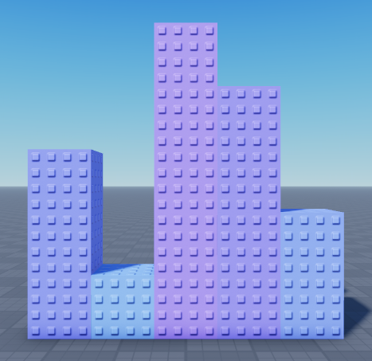
best case: 0 comparisons; worst case: infinite comparisons
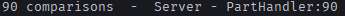- "module.SelectionSort(folder)" loops through the entire array and relocates the smallest object to the front. this method repeats until the array is sorted
(white = current part, red = current minimum part)
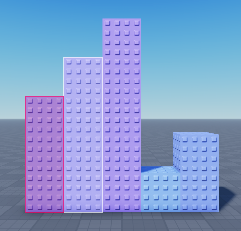best case: O(n^2) comparisons; worst case: O(n^2) comparisons
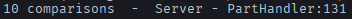- "module.BubbleSort(folder)" checks if the object in front of it has a higher value, if so, then swap positions. this method is faster than selection sort
(white = current part, red = part that is being compared)
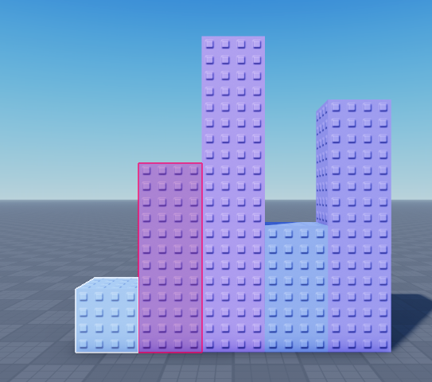best case: O(n) comparisons; worst case: O(n^2) comparisons
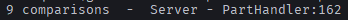here is the completed sort:
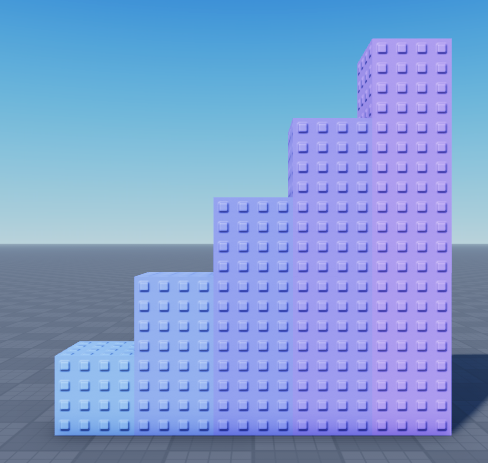note: set this up by including a folder in workspace and these objects inside the module
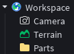 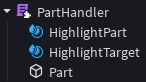2d force simulation:
--local script local UserInputService = game:GetService("UserInputService") local fire = game:GetService("ReplicatedStorage"):WaitForChild("Fire") UserInputService.InputBegan:Connect(function(input, processed) if processed then return end if input.UserInputType == Enum.UserInputType.MouseButton1 then local xVelocity = game:GetService("Workspace").CurrentCamera.ViewportSize.X / 2 - UserInputService:GetMouseLocation().X local yVelocity = game:GetService("Workspace").CurrentCamera.ViewportSize.Y / 2 - UserInputService:GetMouseLocation().Y fire:FireServer(-xVelocity, yVelocity) end end) --server script local MAX_FORCE = 1000 local FORCE = 150 local DURATION = 0.3 local function ApplyVelocity(part : Part, duration : number, xVelocity : number, yVelocity : number) local velocityAttachment = Instance.new("Attachment") local linearVelocity = Instance.new("LinearVelocity") local totalDistance = math.abs(xVelocity) + math.abs(yVelocity) local scale = FORCE / totalDistance xVelocity *= scale yVelocity *= scale velocityAttachment.Parent = part linearVelocity.MaxForce = MAX_FORCE linearVelocity.Attachment0 = velocityAttachment print(xVelocity, yVelocity) linearVelocity.Parent = velocityAttachment linearVelocity.VectorVelocity = Vector3.new(-xVelocity, yVelocity, 0) task.wait(duration) velocityAttachment:Destroy() end game:GetService("ReplicatedStorage").Fire.OnServerEvent:Connect(function(plr, xVelocity, yVelocity) local clone = Instance.new("Part") clone.Shape = "Ball" clone.Parent = workspace clone.CFrame = CFrame.new(0, 10, 0) clone:SetNetworkOwner(nil) clone.Name = plr.Name ApplyVelocity(clone, DURATION, xVelocity, yVelocity) end)
upon clicking the screen, a ball shoots out in the direction depending on the current mouse position
the velocity of the ball between two vector points does not change as a ratio is applied to recalculate speed
this is an example of force being applied to the ball for 0.3 seconds (red arrow = force)
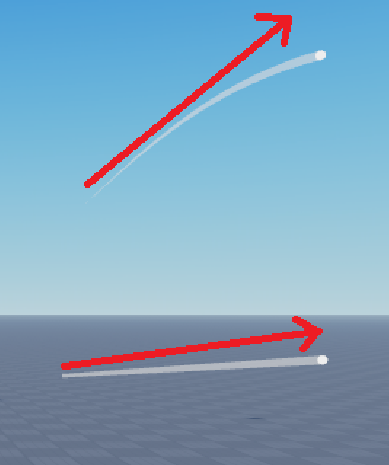note: set this up by including a remote event named "Fire"
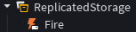a few of my creations
"No Way Out"
https://www.roblox.com/games/10539704239/No-Way-Out
created: 8/9/2022
this has been my first ever game
a puzzle game where the player has to identify the way out through a series of events
hidden levers & passcodes are shown below
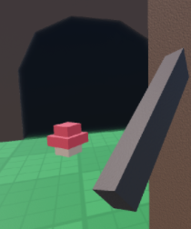 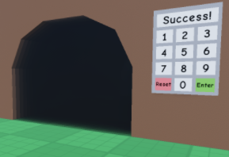"Trial of the Ducks"
https://www.roblox.com/games/123658248244931/Trial-of-the-Ducks
created: 12/27/2024
a 7 day solo project (submitted for a gamejam and won #2)
a 2.5d duck racing simulator - inspired by duck life
contains a working saving system, global leaderboard, global chat, and more
overview & purchasing:
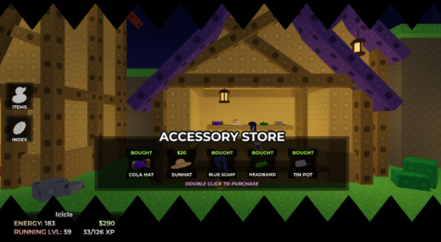training & racing:
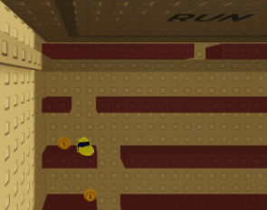
"Developing Obscurity"
https://www.roblox.com/games/108127708342674/Developing-Obscurity
created: 6/6/2025
another 7 day solo project
a multiplayer 2.5d building/parkour game - inspired by ultimate chicken horse
this game is built in a style in which the player is altered into the shoes of the developer
contains a two dimentional building mechanic, round system, saving system, and more
building mechanic - some parts have different functionalities than others:
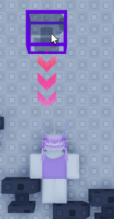 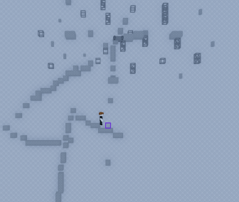descriptions:
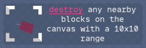c++
definitely my favorite language by far, the speed and precision after compiling the code is both desirable and useful for my macros, programs, etc.
autoclicker:
#include <iostream> #include <windows.h> int main() { float delay; bool isPaused = false; std::cout << "autoclicker cooldown: (sec) \n"; std::cin >> delay; delay *= 1000; while (true) { if (GetAsyncKeyState('Z') & 0x8000) { break; } if (GetAsyncKeyState('X') & 0x8000) { isPaused = !isPaused; while (GetAsyncKeyState('X') & 0x8000) { Sleep(10); } std::cout << "Paused: " << isPaused << "\n"; } if (!isPaused) { INPUT inputs[2] = {}; inputs[0].type = INPUT_MOUSE; inputs[0].mi.dwFlags = MOUSEEVENTF_LEFTDOWN; inputs[1].type = INPUT_MOUSE; inputs[1].mi.dwFlags = MOUSEEVENTF_LEFTUP; SendInput(2, inputs, sizeof(INPUT)); } Sleep(delay); } return 0; }
this macro is one of my first ever programs; what it does is it simply clicks once for every x amount of seconds.
- press the key 'x' to pause, and 'z' to exit.
the autoclicker asks for a cooldown, 0.01 is inputted (100 clicks/sec)
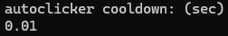'x' is pressed to pause this autoclicker from running
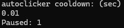'x' is pressed again to resume this autoclicker
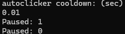get screen coordinates:
#include <iostream> #include <windows.h> int main() { POINT point; while (true) { if (GetAsyncKeyState('Z') & 0x8000) { break; } if (GetAsyncKeyState(VK_LBUTTON) & 0x8000) { if (GetCursorPos(&point)) { std::cout << point.x << " " << point.y << "\n"; while (GetAsyncKeyState(VK_LBUTTON) & 0x8000) { Sleep(25); } } } Sleep(25); } return 0; } }
this is just a simple way to get pixel coordinates on the screen, in which you may use them later.
- press 'z' to exit and left click to get the x & y coords
an example of the program outputting screen coordinates after left clicking:
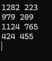tiny task (macro):
#include <iostream>
#include <vector>
#include <chrono>
#include <string>
#include <sstream>
#include <windows.h>
// Global Data
const auto CONTROL_KEY = VK_ESCAPE;
const std::string KEY_NAME = "ESC";
enum class Action {
Key,
Mouse
};
struct ActionData {
Action type;
int key;
float time;
POINT position;
};
// Function Prototypes
float GetTime(std::chrono::steady_clock::time_point& initialTime);
void RecordMacro(std::vector
my most profound and complex program yet: a tiny task clone.
- this macro allows you to record your actions and then run them precisely
- there is also a saving feature where you can copy the source (perhaps edit it) and
paste it in later when you want to run the same action
- note: there are still more things that can be added to this program
when executing, 2 options will be displayed
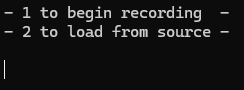here is an example of recording actions:
the left side indicates the key while the right side indicates how long it took to initiate that action
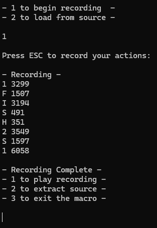when extracting source, you can copy this outputted source
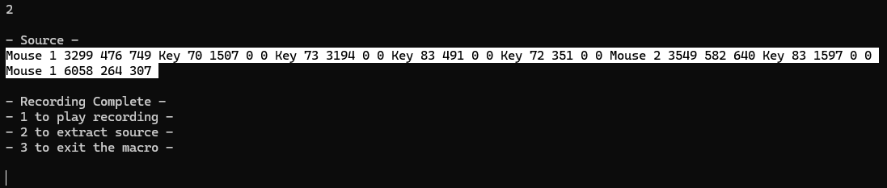now if you run the program again, you may paste in the source or create your own!
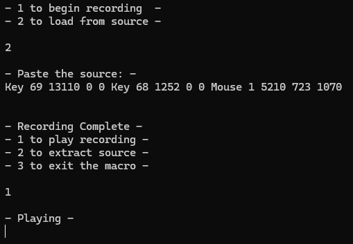javascript
honestly, not a bad language for web development; I like how similar the syntax is compared to c++
calculator:
(ive been busy with school..... uhhh ill add these in a few days-weeks)
miscellaneous
this part showcases a mix of everything else, from other languages to artwork/design
artwork:
text